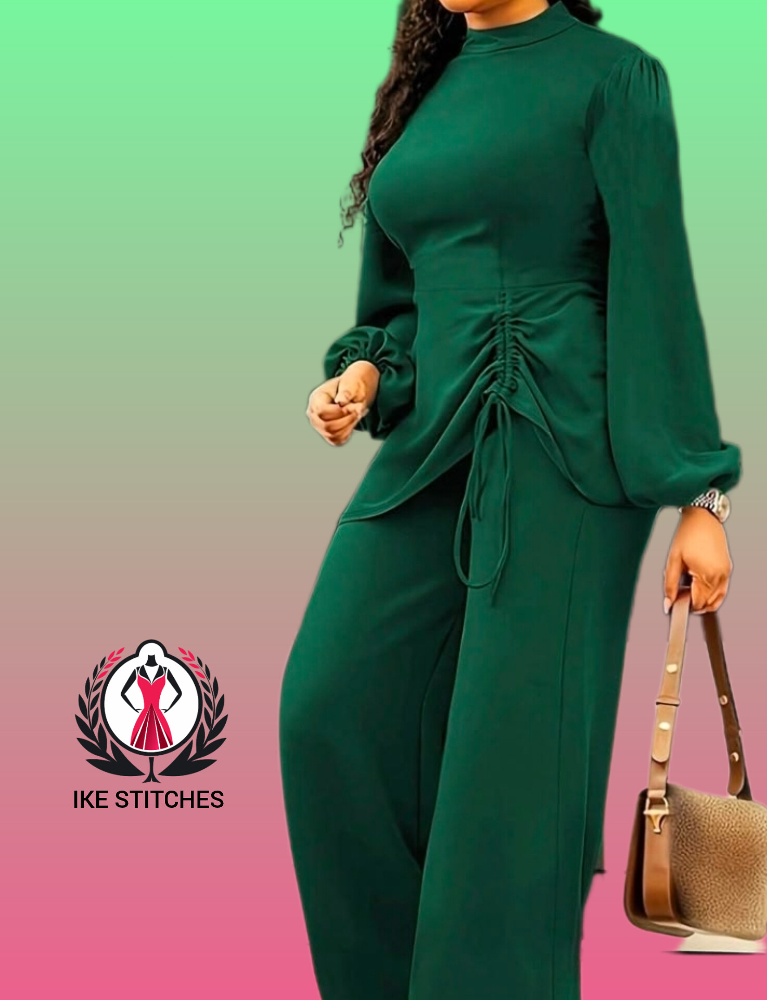
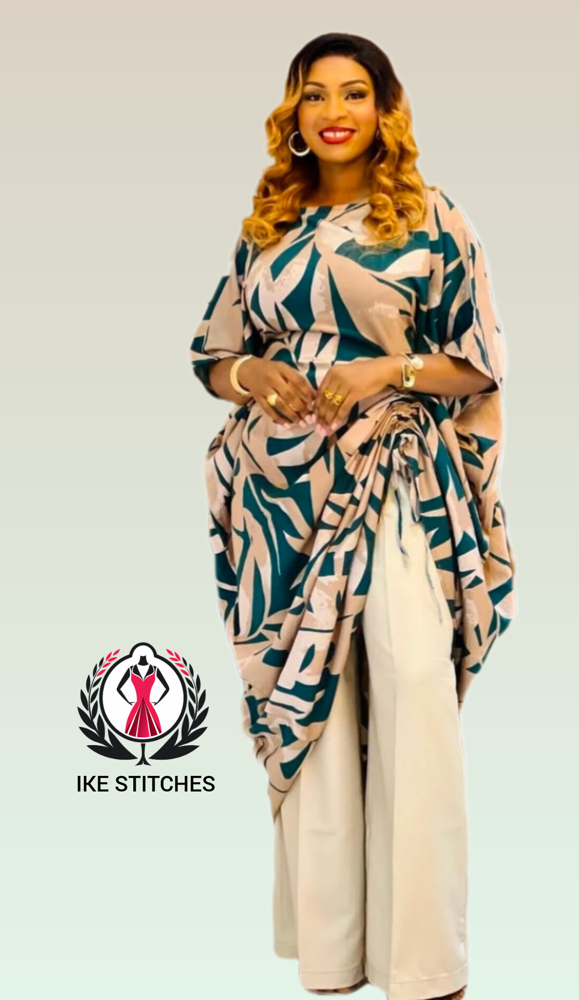
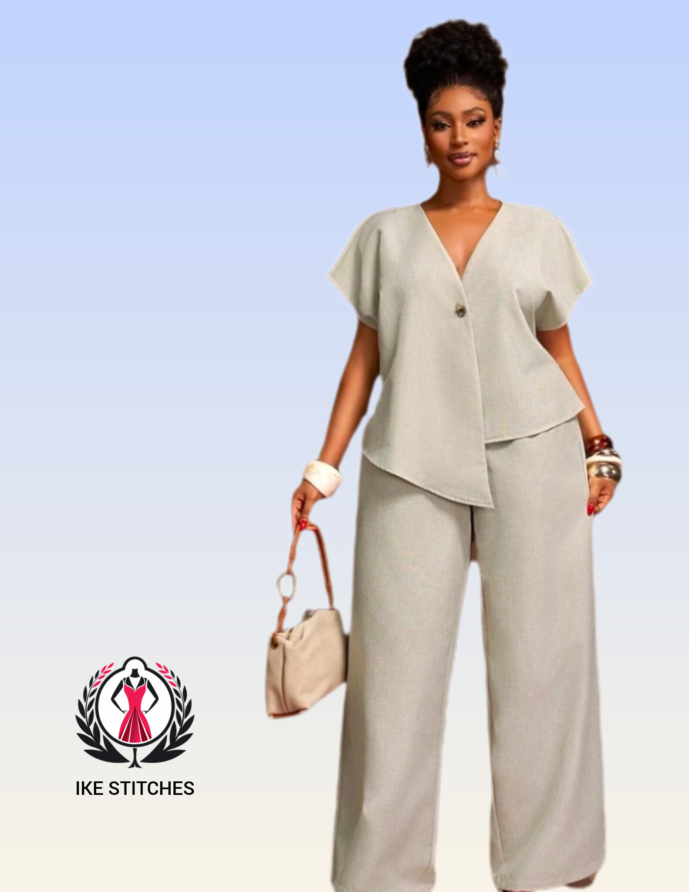

Two Piece Fashion
Luxury Two Piece Set Trends In 2026
May 2026
IKE-STITCHES
Two piece fashion sets have become one of the biggest modern luxury fashion trends in Africa. These matching outfits combine comfort, elegance and versatility, making them perfect for casual outings, luxury events and stylish daily fashion.
Fashion lovers now prefer coordinated outfits because they create a complete luxury appearance without requiring excessive styling effort. Two piece sets provide balance, simplicity and elegance while still allowing designers to experiment with colors, textures and creative tailoring techniques.

The beauty of a two piece outfit depends heavily on fabric selection. Satin, crepe, silk, Ankara and premium cotton fabrics are among the most preferred materials for luxury sets. Designers now combine modern cuts with high quality fabrics to create elegant outfits that feel comfortable while maintaining a classy appearance.

Two piece sets are extremely versatile and can be styled in several creative ways. Accessories such as luxury handbags, heels and jewelry help elevate the overall look. For a more sophisticated appearance, neutral colors and fitted tailoring often create the most elegant finish.
“Luxury fashion is not only about beauty, but also confidence and comfort.”
Social media influencers and celebrities have significantly increased the popularity of two piece fashion sets. Modern designers now create luxury coordinated outfits suitable for birthdays, vacations, photoshoots and casual luxury occasions.

Two piece fashion sets continue to dominate modern luxury styling because of their comfort, versatility and elegant appearance. Whether casual or sophisticated, a properly tailored two piece outfit will always remain stylish and fashionable.
← Back To Blog